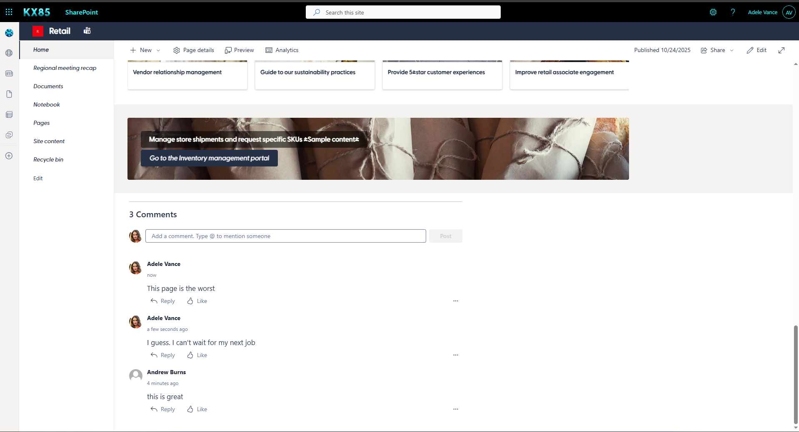
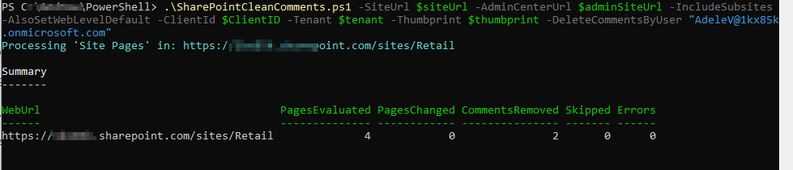
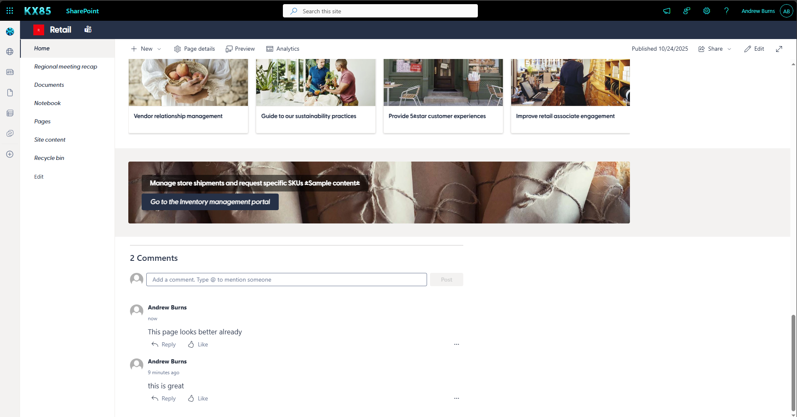

SharePoint Clean Comments
Note
Further details on registering an app for using PnP PowerShell see Saluadeen > Rajacks blog article (External Site)
Summary
Remove comments for user(s) across entire site collection or remove all comments or disable them completely:
- Follow the article above to create a pnp app registration
- Use a combination of flags for your desired outcome
- By User -DeleteCommentsByUser "alex.wu@contoso.com","i:0#.f|membership|olduser@contoso.com"
- All Comments -DeleteExistingComment
- Disable Comments -DisableComment

This Page lists all of Adeles Comments.
Next we'll execute the script to remove her comments (I've added a new one so you can compare the time stamps)

Here we can see her comments are gone.

<#
----------------------------------------------------------------------------
Created: Andrew Burns
Date: 10/17/2025
Disclaimer:
THE SOFTWARE IS PROVIDED "AS IS", WITHOUT WARRANTY OF ANY KIND, EXPRESS OR
IMPLIED, INCLUDING BUT NOT LIMITED TO THE WARRANTIES OF MERCHANTABILITY,
FITNESS FOR A PARTICULAR PURPOSE AND NONINFRINGEMENT. IN NO EVENT SHALL THE
AUTHORS OR COPYRIGHT HOLDERS BE LIABLE FOR ANY CLAIM, DAMAGES OR OTHER
LIABILITY, WHETHER IN AN ACTION OF CONTRACT, TORT OR OTHERWISE, ARISING FROM,
OUT OF OR IN CONNECTION WITH THE SOFTWARE OR THE USE OR OTHER DEALINGS IN THE
SOFTWARE.
.Synopsis
Disable comments and/or delete existing comments on all modern SharePoint pages in a site collection.
PnP.PowerShell + App Registration (certificate / thumbprint).
.Usage
Delete all comments or turn off comments on all pages within a site collection or both.
.Parameters
-DisableComments Turn off comments at site/web/page scope.
-DeleteExistingComments Delete all comments on each page.
-DeleteCommentsByUser One or more UPNs/emails/claims to delete comments from specific user(s).
-AlsoSetWebLevelDefault Also set web-level default (subsites too if included).
-SkipSiteLevelDisable Skip the site collection level toggle.
-IncludeSubsites Include subsites.
-WhatIfMode Dry run—no changes.
.Auth
Connect-PnPOnline -Url <...> -ClientId <GUID> -Tenant <tenant> -Thumbprint <thumb>
(Requires an Entra ID app with suitable SharePoint **Application** permissions; typically Sites.FullControl.All.)
See: Register an Entra ID app for PnP PowerShell.
.Reqs
- PowerShell 7+
- Module: PnP.PowerShell
.References
Salaudeen Rajack Connect to SharePoint Online using PnP PowerShell with App Registration
https://www.sharepointdiary.com/2022/10/connect-to-sharepoint-online-using-azure-ad-app-id-from-powershell.html
.Examples
Remove All Comments By User(s)
.\SharePointCleanComments.ps1 -SiteUrl $siteUrl -AdminCenterUrl $adminSiteUrl -IncludeSubsites -AlsoSetWebLevelDefault -ClientId $ClientID -Tenant $tenant -Thumbprint $thumbprint -DeleteCommentsByUser "alex.wu@contoso.com","i:0#.f|membership|olduser@contoso.com
Remove All Comments
.\SharePointCleanComments.ps1 -SiteUrl $siteUrl -AdminCenterUrl $adminSiteUrl -IncludeSubsites -AlsoSetWebLevelDefault -ClientId $ClientID -Tenant $tenant -Thumbprint $thumbprint -DeleteExistingComments
Remove All Comments and Disable all Comments
.\SharePointCleanComments.ps1 -SiteUrl $siteUrl -AdminCenterUrl $adminSiteUrl -IncludeSubsites -AlsoSetWebLevelDefault -ClientId $ClientID -Tenant $tenant -Thumbprint $thumbprint -DisableComments -DeleteExistingComments
----------------------------------------------------------------------------
.REFERENCES
- Connect-PnPOnline (auth options) – https://pnp.github.io/powershell/cmdlets/Connect-PnPOnline.html
- Get-PnPListItemComment (cmdlet + properties) – PnP repo docs/source
- Remove-PnPListItemComment (source implementation) – PnP repo
- Comment replies REST shape – PnP discussion (replies endpoint)
#>
[CmdletBinding()]
param(
[Parameter(Mandatory=$true)]
[string]$SiteUrl,
[Parameter(Mandatory=$false)]
[string]$AdminCenterUrl,
[Parameter(Mandatory=$false)]
[switch]$IncludeSubsites,
[Parameter(Mandatory=$false)]
[switch]$SkipSiteLevelDisable,
[Parameter(Mandatory=$false)]
[switch]$AlsoSetWebLevelDefault,
[Parameter(Mandatory=$false)]
[switch]$WhatIfMode,
# --- Work flags ---
[Parameter(Mandatory=$false)]
[switch]$DisableComments,
[Parameter(Mandatory=$false)]
[switch]$DeleteExistingComments,
[Parameter(Mandatory=$false)]
[Alias('DeleteCommentsByEmail','DeleteCommentsByUpn')]
[string[]]$DeleteCommentsByUser, # UPN/email/claims; accepts multiple
# --- App registration (certificate) ---
[Parameter(Mandatory=$true)]
[string]$ClientId,
[Parameter(Mandatory=$true)]
[string]$Tenant, # e.g. contoso.onmicrosoft.com or Tenant GUID
[Parameter(Mandatory=$true)]
[string]$Thumbprint
)
function Ensure-Module {
param([Parameter(Mandatory=$true)][string]$Name)
if (-not (Get-Module -ListAvailable -Name $Name)) {
Write-Host "Installing module $Name..." -ForegroundColor Yellow
try { Install-Module $Name -Scope CurrentUser -Force -AllowClobber -ErrorAction Stop }
catch { throw "Failed to install module '$Name'. Error: $($_.Exception.Message)" }
}
Import-Module $Name -ErrorAction Stop
}
function Connect-PnPApp {
param(
[Parameter(Mandatory=$true)][string]$Url,
[Parameter(Mandatory=$true)][string]$ClientId,
[Parameter(Mandatory=$true)][string]$Tenant,
[Parameter(Mandatory=$true)][string]$Thumbprint
)
Connect-PnPOnline -Url $Url -ClientId $ClientId -Tenant $Tenant -Thumbprint $Thumbprint -ReturnConnection
}
function Normalize-IdentityString {
param([string]$Value)
if ([string]::IsNullOrWhiteSpace($Value)) { return $null }
return ($Value.Trim().ToLower() -replace '^i:0#.f\|membership\|','')
}
function Should-DeleteByUser {
param(
[Parameter(Mandatory=$true)]$Comment, # PnP comment object
[Parameter(Mandatory=$true)][string[]]$UserFilters
)
if (-not $UserFilters -or $UserFilters.Count -eq 0) { return $false }
$targets = $UserFilters | ForEach-Object { Normalize-IdentityString $_ } | Where-Object { $_ }
if ($targets.Count -eq 0) { return $false }
$login = $null; $email = $null; $title = $null
try { $login = Normalize-IdentityString $Comment.Author.LoginName } catch {}
try { $email = Normalize-IdentityString $Comment.Author.Email } catch {}
try { $title = Normalize-IdentityString $Comment.Author.Title } catch {}
foreach ($t in $targets) {
if ($t -and ($t -eq $login -or $t -eq $email -or $t -eq $title)) { return $true }
}
return $false
}
function Remove-CommentByIdRest {
param(
[Parameter(Mandatory=$true)][string]$WebUrl,
[Parameter(Mandatory=$true)][int]$ItemId,
[Parameter(Mandatory=$true)][int]$CommentId,
[Parameter(Mandatory=$true)]$Connection
)
# DELETE /_api/web/lists/getByTitle('Site%20Pages')/items({id})/comments({commentId})
$url = "$WebUrl/_api/web/lists/getByTitle('Site%20Pages')/items($ItemId)/comments($CommentId)"
Invoke-PnPSPRestMethod -Method Delete -Url $url -Connection $Connection -ErrorAction Stop | Out-Null
}
function Disable-SiteLevelComments {
param(
[Parameter(Mandatory=$true)][string]$AdminCenterUrl,
[Parameter(Mandatory=$true)][string]$TargetSiteUrl,
[Parameter(Mandatory=$true)][string]$ClientId,
[Parameter(Mandatory=$true)][string]$Tenant,
[Parameter(Mandatory=$true)][string]$Thumbprint,
[switch]$WhatIfMode
)
if (-not $DisableComments) { return }
Write-Host "Disabling comments at the *site collection* level for $TargetSiteUrl..." -ForegroundColor Cyan
if ($WhatIfMode) {
Write-Host "[WhatIf] Set-PnPSite -Identity $TargetSiteUrl -CommentsOnSitePagesDisabled" -ForegroundColor DarkGray
return
}
$adminCon = Connect-PnPApp -Url $AdminCenterUrl -ClientId $ClientId -Tenant $Tenant -Thumbprint $Thumbprint
try {
Set-PnPSite -Identity $TargetSiteUrl -CommentsOnSitePagesDisabled -Connection $adminCon -ErrorAction Stop
Write-Host "Site-level comments disabled." -ForegroundColor Green
} catch {
Write-Warning "Set-PnPSite failed for $TargetSiteUrl. Error: $($_.Exception.Message)"
}
}
function Get-AllWebUrls {
param(
[Parameter(Mandatory=$true)][string]$RootSiteUrl,
[Parameter(Mandatory=$true)][string]$ClientId,
[Parameter(Mandatory=$true)][string]$Tenant,
[Parameter(Mandatory=$true)][string]$Thumbprint,
[switch]$IncludeSubsites
)
$urls = New-Object System.Collections.Generic.List[string]
$urls.Add($RootSiteUrl)
$rootCon = Connect-PnPApp -Url $RootSiteUrl -ClientId $ClientId -Tenant $Tenant -Thumbprint $Thumbprint
if ($IncludeSubsites) {
try {
$subs = Get-PnPSubWeb -Recurse -IncludeRootWeb:$false -Connection $rootCon -ErrorAction Stop
foreach ($w in $subs) { if ($w.Url) { $urls.Add($w.Url) } }
} catch {
Write-Warning "Failed to enumerate subsites. Error: $($_.Exception.Message)"
}
}
return $urls
}
function Set-WebDefaultIfRequested {
param(
[Parameter(Mandatory=$true)][string]$WebUrl,
[Parameter(Mandatory=$true)][string]$ClientId,
[Parameter(Mandatory=$true)][string]$Tenant,
[Parameter(Mandatory=$true)][string]$Thumbprint,
[switch]$WhatIfMode
)
if (-not ($AlsoSetWebLevelDefault -and $DisableComments)) { return }
if ($WhatIfMode) {
Write-Host "[WhatIf] $WebUrl : Set-PnPWeb -CommentsOnSitePagesDisabled" -ForegroundColor DarkGray
} else {
$con = Connect-PnPApp -Url $WebUrl -ClientId $ClientId -Tenant $Tenant -Thumbprint $Thumbprint
try {
Set-PnPWeb -CommentsOnSitePagesDisabled -Connection $con -ErrorAction Stop
Write-Host "Set web-level default (comments disabled) for $WebUrl" -ForegroundColor Green
} catch {
Write-Warning "Failed to set web-level default for $WebUrl. Error: $($_.Exception.Message)"
}
}
}
function Process-PagesInWeb {
param(
[Parameter(Mandatory=$true)][string]$WebUrl,
[Parameter(Mandatory=$true)][string]$ClientId,
[Parameter(Mandatory=$true)][string]$Tenant,
[Parameter(Mandatory=$true)][string]$Thumbprint,
[switch]$WhatIfMode
)
Write-Host "Processing 'Site Pages' in: $WebUrl" -ForegroundColor Cyan
$con = Connect-PnPApp -Url $WebUrl -ClientId $ClientId -Tenant $Tenant -Thumbprint $Thumbprint
try { $null = Get-PnPList -Identity "Site Pages" -Connection $con -ErrorAction Stop }
catch {
Write-Host "No 'Site Pages' library in $WebUrl. Skipping." -ForegroundColor DarkYellow
return [pscustomobject]@{ WebUrl=$WebUrl; PagesEvaluated=0; PagesChanged=0; CommentsRemoved=0; Skipped=0; Errors=0 }
}
$pagesChanged = 0
$pagesEvaluated = 0
$commentsRemoved = 0
$skipped = 0
$errors = 0
$query = @"
<View Scope='RecursiveAll'>
<Query>
<Where>
<And>
<Eq><FieldRef Name='FSObjType'/><Value Type='Integer'>0</Value></Eq>
<Contains><FieldRef Name='FileLeafRef'/><Value Type='File'>.aspx</Value></Contains>
</And>
</Where>
</Query>
<RowLimit>5000</RowLimit>
</View>
"@
try {
$items = Get-PnPListItem -List "Site Pages" -PageSize 2000 -Query $query -Connection $con -ErrorAction Stop
} catch {
Write-Warning "Failed to enumerate pages in $WebUrl. Error: $($_.Exception.Message)"
return [pscustomobject]@{ WebUrl=$WebUrl; PagesEvaluated=0; PagesChanged=0; CommentsRemoved=0; Skipped=0; Errors=1 }
}
$hasField = $false
try { $fld = Get-PnPField -List "Site Pages" -Identity "CommentsDisabled" -Connection $con -ErrorAction Stop; if ($fld) { $hasField = $true } } catch {}
$targetUsers = @()
if ($DeleteCommentsByUser) { $targetUsers = $DeleteCommentsByUser | ForEach-Object { Normalize-IdentityString $_ } | Where-Object { $_ } }
foreach ($i in $items) {
try {
$pagesEvaluated++
$name = $i.FieldValues["FileLeafRef"]
# --- DELETE EXISTING COMMENTS (All OR by user) ---
if ($DeleteExistingComments -or ($targetUsers.Count -gt 0)) {
if ($WhatIfMode) {
if ($DeleteExistingComments) {
Write-Host "[WhatIf] $WebUrl : $name -> Remove-PnPListItemComment -List 'Site Pages' -Identity $($i.Id) -All -Force" -ForegroundColor DarkGray
} elseif ($targetUsers.Count -gt 0) {
Write-Host "[WhatIf] $WebUrl : $name -> delete comments from user(s): $($targetUsers -join ', ')" -ForegroundColor DarkGray
}
} else {
# Fetch comments once
$existing = @()
try { $existing = Get-PnPListItemComment -List "Site Pages" -Identity $i.Id -Connection $con -ErrorAction SilentlyContinue } catch {}
$existing = @($existing)
if ($DeleteExistingComments) {
if ($existing.Count -gt 0) {
try {
Remove-PnPListItemComment -List "Site Pages" -Identity $i.Id -All -Force -Connection $con -ErrorAction Stop
$commentsRemoved += $existing.Count
} catch {
$errors++; Write-Warning "Failed to remove all comments on $name. Error: $($_.Exception.Message)"
}
}
} elseif ($targetUsers.Count -gt 0 -and $existing.Count -gt 0) {
# Filter by author; delete precisely by ID through REST, fallback to -Text if needed
foreach ($c in $existing) {
if (Should-DeleteByUser -Comment $c -UserFilters $targetUsers) {
try {
if ($c.Id -is [int]) {
Remove-CommentByIdRest -WebUrl $WebUrl -ItemId $i.Id -CommentId $c.Id -Connection $con
} else {
# Fallback to text-based deletion (less precise if duplicates)
Remove-PnPListItemComment -List "Site Pages" -Identity $i.Id -Text $c.Text -Force -Connection $con -ErrorAction Stop
}
$commentsRemoved++
} catch {
$errors++; Write-Warning "Failed to remove a comment on $name (author=$($c.Author.LoginName)). Error: $($_.Exception.Message)"
}
}
}
}
} # end not WhatIf
} # end deletion block
# --- DISABLE COMMENTS (optional) ---
if ($DisableComments) {
if ($hasField) {
$current = $i.FieldValues["CommentsDisabled"]
if ($current -ne $true) {
if ($WhatIfMode) {
Write-Host "[WhatIf] $WebUrl : $name -> Set CommentsDisabled = \$true" -ForegroundColor DarkGray
} else {
Set-PnPListItem -List "Site Pages" -Identity $i.Id -Values @{"CommentsDisabled"=$true} -SystemUpdate -Connection $con | Out-Null
}
$pagesChanged++
} else { $skipped++ }
} else {
if ($WhatIfMode) {
Write-Host "[WhatIf] $WebUrl : $name -> Set-PnPPage -Identity '$name' -CommentsEnabled:\$false" -ForegroundColor DarkGray
} else {
$setOk = $false
try { Set-PnPPage -Identity $name -CommentsEnabled:$false -Connection $con -ErrorAction Stop; $setOk = $true }
catch {
try { Set-PnPClientSidePage -Identity $name -CommentsEnabled:$false -Connection $con -ErrorAction Stop; $setOk = $true }
catch { $setOk = $false }
}
if ($setOk) { $pagesChanged++ } else { $errors++; Write-Warning "Could not disable comments for $name." }
}
}
}
} catch {
$errors++
Write-Warning "Failed processing page (Id=$($i.Id)) in $WebUrl. Error: $($_.Exception.Message)"
}
}
return [pscustomobject]@{
WebUrl = $WebUrl
PagesEvaluated = $pagesEvaluated
PagesChanged = $pagesChanged
CommentsRemoved = $commentsRemoved
Skipped = $skipped
Errors = $errors
}
}
# -----------------------------
# Main
# -----------------------------
try {
Ensure-Module -Name "PnP.PowerShell"
if (-not $DisableComments -and -not $DeleteExistingComments -and -not $DeleteCommentsByUser) {
Write-Warning "No work selected. Add -DisableComments and/or -DeleteExistingComments and/or -DeleteCommentsByUser."
return
}
if ($DisableComments -and -not $SkipSiteLevelDisable) {
if ([string]::IsNullOrWhiteSpace($AdminCenterUrl)) {
Write-Warning "AdminCenterUrl not provided. Skipping site-level toggle. (Pass -AdminCenterUrl https://<tenant>-admin.sharepoint.com)"
} else {
Disable-SiteLevelComments -AdminCenterUrl $AdminCenterUrl -TargetSiteUrl $SiteUrl `
-ClientId $ClientId -Tenant $Tenant -Thumbprint $Thumbprint -WhatIfMode:$WhatIfMode
}
}
$webUrls = Get-AllWebUrls -RootSiteUrl $SiteUrl -ClientId $ClientId -Tenant $Tenant -Thumbprint $Thumbprint -IncludeSubsites:$IncludeSubsites
$results = New-Object System.Collections.Generic.List[object]
foreach ($w in $webUrls) {
Set-WebDefaultIfRequested -WebUrl $w -ClientId $ClientId -Tenant $Tenant -Thumbprint $Thumbprint -WhatIfMode:$WhatIfMode
$r = Process-PagesInWeb -WebUrl $w -ClientId $ClientId -Tenant $Tenant -Thumbprint $Thumbprint -WhatIfMode:$WhatIfMode
$results.Add($r)
}
# Summary
Write-Host "`nSummary" -ForegroundColor White
Write-Host "-------"
$totalEval = ($results | Measure-Object -Property PagesEvaluated -Sum).Sum
$totalChanged = ($results | Measure-Object -Property PagesChanged -Sum).Sum
$totalDeleted = ($results | Measure-Object -Property CommentsRemoved -Sum).Sum
$totalSkipped = ($results | Measure-Object -Property Skipped -Sum).Sum
$totalErrors = ($results | Measure-Object -Property Errors -Sum).Sum
$results | Format-Table -AutoSize
Write-Host "`nTotals: Evaluated=$totalEval, Changed=$totalChanged, CommentsDeleted=$totalDeleted, Skipped=$totalSkipped, Errors=$totalErrors" -ForegroundColor White
if ($WhatIfMode) { Write-Host "`n(WhatIf mode was ON. No changes were made.)" -ForegroundColor DarkYellow }
else { Write-Host "`nCompleted." -ForegroundColor Green }
} catch {
Write-Error $_.Exception.Message
exit 1
}
Check out the PnP PowerShell to learn more at: https://aka.ms/pnp/powershell
The way you login into PnP PowerShell has changed please read PnP Management Shell EntraID app is deleted : what should I do ?
Contributors
| Author(s) |
|---|
| Andrew Burns |
Disclaimer
THESE SAMPLES ARE PROVIDED AS IS WITHOUT WARRANTY OF ANY KIND, EITHER EXPRESS OR IMPLIED, INCLUDING ANY IMPLIED WARRANTIES OF FITNESS FOR A PARTICULAR PURPOSE, MERCHANTABILITY, OR NON-INFRINGEMENT.